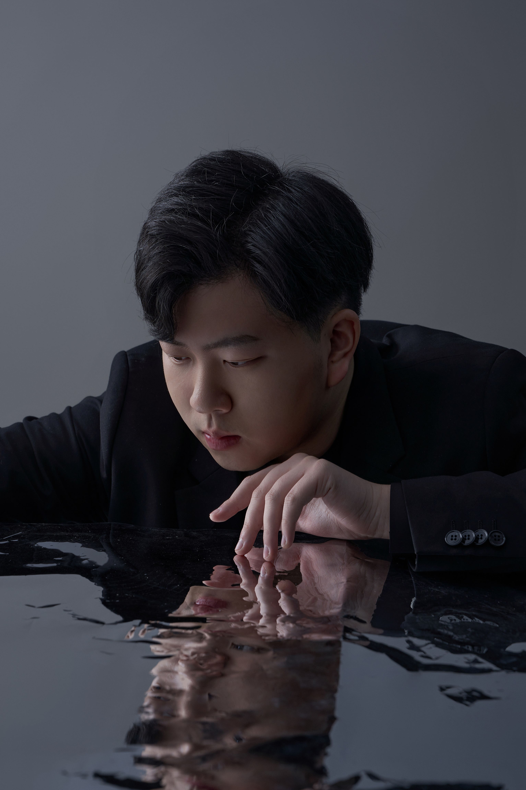
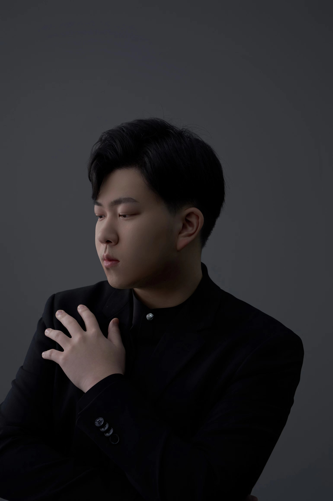

Concert Pianist
A voice of majestic grandeur and sentimental grace — performing across two continents.

Pianist Che Li, a native of Zhejiang, China, has been an active performer in both the United States and China. He performed the Grieg Piano Concerto with the Shanghai Philharmonic Orchestra (2016), Chopin's Piano Concerto No. 2 with the Santa Monica Symphony Orchestra at Colburn Conservatory (2019), and Tchaikovsky Piano Concerto No. 1 with the Mercury Orchestra at New England Conservatory (2023).
He has appeared as solo recitalist at the Wenzhou University School of Music, Cadillac Shanghai Concert Hall, and Hefei Grand Theater as part of the acclaimed "Yangtze River Delta New Shining Stars" series.
Che Li began piano studies at the age of four, taught by his mother. After studies at the Shanghai Conservatory with Prof. Yunlin Yang, he entered New England Conservatory in 2019, graduating in 2025 with a Master of Music under Alexander Korsantia. He now pursues an Artist Diploma with Pavel Nersessian at Boston University College of Fine Arts.
"Right from the introduction of the concerto, one sensed the majestic, yet charming grandeur in Li's pianism… Li gave an immaculate and pristine take of the first theme; the second and third themes sounded sentimental and ever flowing… With rapture, the crowd called Li back four times."
Pianist Che Li is a prize-winning concert pianist from Zhejiang, China, currently pursuing an Artist Diploma at Boston University College of Fine Arts under Pavel Nersessian. Winner of the 2026 BU Richmond Piano Competition and the 2024 IX Krystian Tkaczewski International Piano Competition, he has performed with major orchestras in both the United States and China.
Available for solo recitals, concerto engagements, collaborative performances, and masterclasses.
For booking, press inquiries, or collaborations, please reach out directly.
{kind=link}
{kind=link}